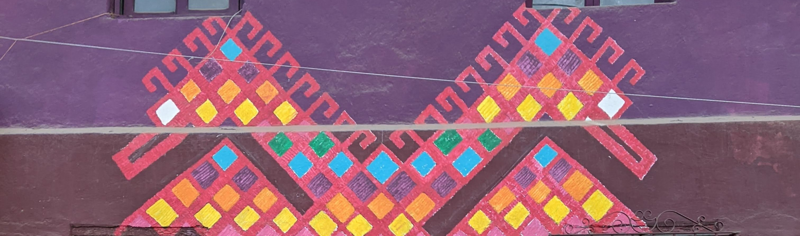

Español
Ojer taq tzij : Stories from Chichicastenango

One of the outcomes of the Chichicastenango K'iche' Language Documentation Project has been a collection of stories, both traditional and modern. The book Ojer taq tzij includes eight stories narrated by five storytellers from Chichicastenango. Each story can be listened to in its original, oral form or read in K'iche' transcription or its Spanish translation. (Note that the audio files linked here have been edited to remove errors and repetitions, but the complete, original files, exactly as recorded, can be accessed through through the Archive of the Indigenous Languages of Latin America.)
- Download: Complete book (eight stories)
- Jun achi xub'an lo tukur. In this story narrated by Rafaela Sen Ixtuc, a man pretends to be an owl in order to try to trick a young woman into marrying him. Download: Audio, Bilingual text.
- Ri yo'k, ri imul. A collection of anechdotes in the tradition of the coyote and the rabbit, narrated by Manuel Riquiac Tzen. Download: Audio, Bilingual text.
- Jun ak'al ma jarkan. This traditional story narrated by Manuel Riquiac Tzen features a young man who learns the consequences of laziness when he trades places with a vulture. Download: Audio, Bilingual text.
- Ri k'lawe' kot. Manuel Chicoj Xirum tells the legend of the double-headed eagle and its importance in the culture of Chichicastenango. Download: Audio, Bilingual text.
- Jun ala xaq kaxq'e'nik An interpretation of the story of the boy who cried wolf, narrated by Lucía Xirum Equilá. Download: Audio, Bilingual text.
- Ri ja' rech Chicuá. This story narrated by Julia González Bocel, in which a young woman marries a water spirit, explains the origins of the abundant water springs in the rural community of Chicúa. Download: Audio, Bilingual text.
- Jun itzel che'. In this story narrated by Julia González Bocel, the community of Chicúa must deal with an evil tree that houses mischievous goblins. Download: Audio, Bilingual text.
- Jun achi xujal b'i tukur. This traditional story narrated by Julia González Bocel tells of a man who conspires with an owl in order to intimidate a couple into allowing him to marry their daughter. Download: Audio, Bilingual text.